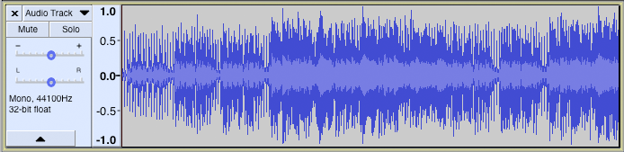
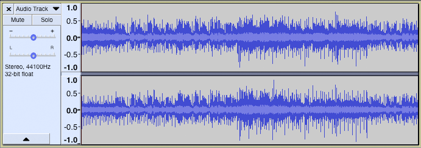
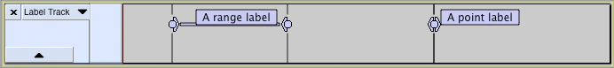
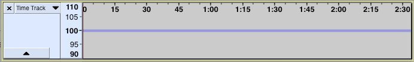
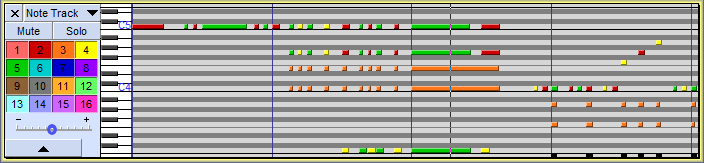

Tracks Overview
Audio tracks
Audio Tracks contain digitally sampled sounds. They presents from left to right:
- a Track Control Panel with Audio Track Dropdown Menu for changing View Mode and audio properties of that individual track
- a Vertical Scale with units
- a visual representation of the audio (by default this is the Waveform view as in the images below).
- 
- 
Label tracks
A Label Track is an additional track that can be created in your project; it is used in conjunction with audio tracks but contains no audio itself. It can be used to mark specific points or ranges in the project with point labels or range labels.
- 
Time Tracks
A Time Track is used in conjunction with one or more audio tracks to progressively increase or decrease playback speed (and pitch) over the length of the audio. Speed changes are controlled by manipulating the blue "time warp" line with the Envelope Tool used for making gradual volume changes. If the blue line is dragged above the horizontal, the audio plays faster; if dragged below, it plays slower.
- 
Note Tracks
Note Tracks display data from MIDI files - these can be imported with the command.
Audacity can play these MIDI files, but note that although this should just work on Windows on Mac and Linux additional software may be required (for details please see this page).
Editing these Note tracks is possible, but very limited.
- 
For more details please see: Note Tracks.
Track focus
You may have noticed in the images on this page that Note track has a yellow border around it. This border indicates that this track has focus.
The track that has focus is the track that accepts any command whose name includes "focused track". These commands include commands such as "Close focused track" (Shift + C), "Mute/Unmute focused track" (Shift + U) and "Toggle focused track" (Return or Enter, which toggles whether the focused track is selected or not).
The complete list of "focused track" commands can be seen by searching for "focused track" (without quotes) in Keyboard Preferences or by viewing the description of these commands in Keyboard Shortcut Reference.
Track focus is used to select audio and to extend or move the selection region into other tracks using the keyboard.